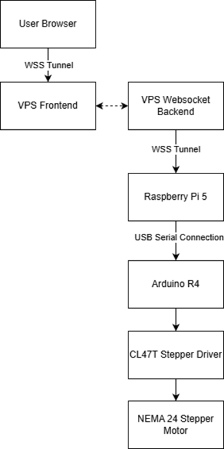
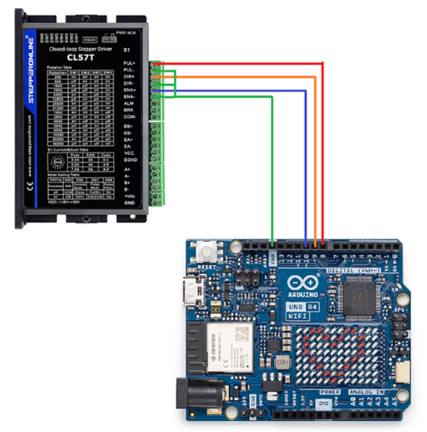
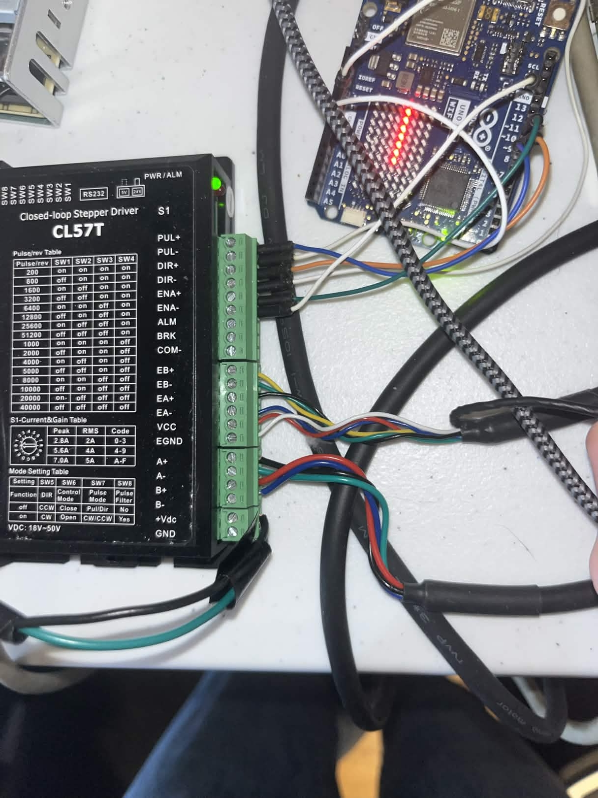
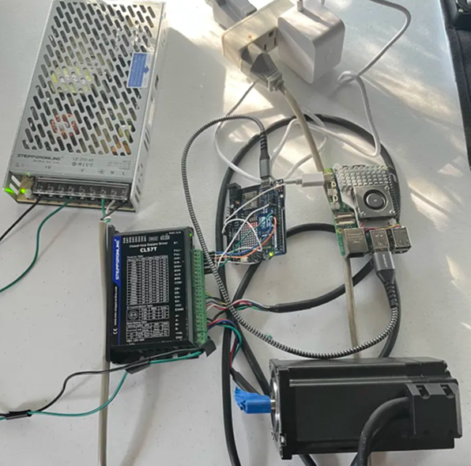
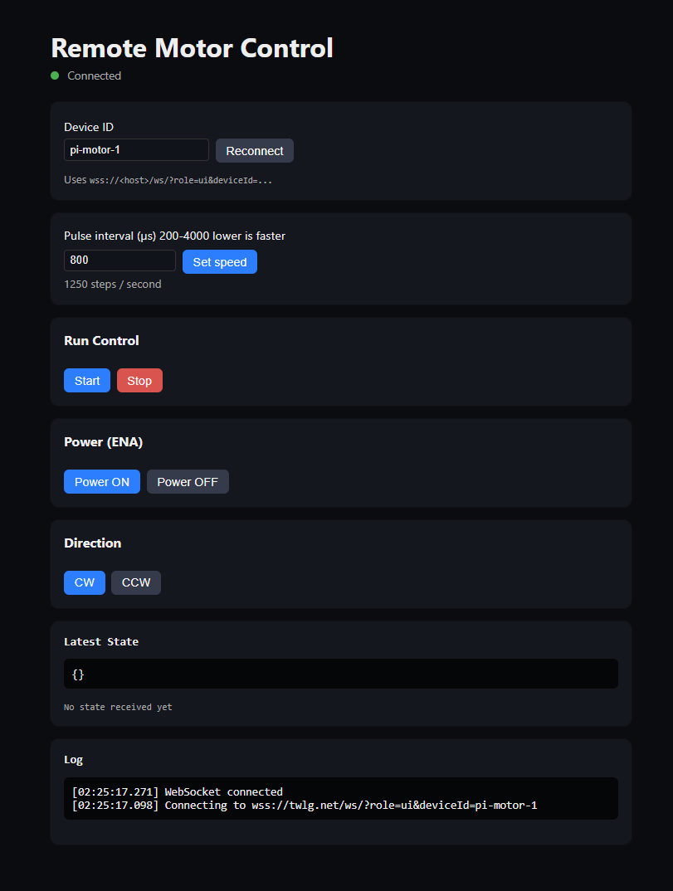

Build Your Own Remote Stepper Motor Controller
Most smart devices today depend on manufacturer cloud services to function. When those services are discontinued — or the company stops supporting the hardware — the device becomes useless, contributing to a growing cycle of e-waste and leaving users with no control over hardware they own.
This project demonstrates an alternative: a fully self-hosted IoT control pipeline from open code and with no particular reliance on any third-party platform. The goal is to show that real-time remote device control over the public internet is achievable without proprietary ecosystems — and to make that architecture reproducible by anyone with the hardware and the motivation to build it.
This tutorial walks you through assembling and running the system yourself, from wiring the hardware to controlling a NEMA 24 stepper motor from a browser anywhere in the world.
How It Works
A browser-based frontend connects over secure WebSockets to a relay server running on a publicly reachable Linux server — a VPS (Virtual Private Server) or a private machine with a public IP both work. The relay forwards commands to a Raspberry Pi, which translates them into a compact serial protocol and sends them to an Arduino over USB. The Arduino drives a stepper motor through a CL57T driver. The specific hardware used here was chosen for availability — the architecture itself is not tied to any of these particular components, and substitutions are straightforward if you understand what each piece is doing.
The split between the Pi and the Arduino is intentional and worth understanding before building. The Raspberry Pi's GPIO pins operate at 3.3 V, which is insufficient to directly drive the CL57T's optocoupler inputs in 5 V mode without additional circuitry (a level shifter or resistor network). The Arduino UNO R4, on the other hand, outputs 5 V logic and is dedicated entirely to generating precise step pulses — a timing-critical task. Attempts to have the Arduino also manage a WebSocket or network connection while pulsing were unsuccessful: being single-core, it could not reliably balance network handling with the microsecond-level pulse timing the driver requires. The Pi handles all networking; the Arduino handles all motor timing. Each does one job well.
Because server.js runs continuously and independently on the VPS, connections are fully asynchronous —
the Pi and the browser UI connect and disconnect on their own schedules. This also means the design scales to
multiple devices: each Raspberry Pi registers with a unique deviceId, and any
browser UI can target any connected device by selecting that ID. Multiple UIs can monitor the same device simultaneously.

Figure 1 — Full system component overview
1 — Parts & Software You Need
The hardware listed below is what was used in this project. It is not the only combination that will work — if you have experience with similar components, feel free to substitute where it makes sense. The core requirements are: a microcontroller that can output step/direction pulses over a serial interface, a compatible stepper driver, and a Linux-capable SBC (single-board computer) with network access to act as the bridge. Specific substitution notes are included in each row.
Hardware
| Component (used in this project) | Notes & Alternatives |
|---|---|
| Arduino UNO R4 WiFi | Used here because it was on hand. The built-in LED matrix is a bonus — the sketch uses it for status display, but it is not essential to the control pipeline. Any Arduino (or compatible board) that can do USB serial at 115200 baud and output 5 V digital pulses will work; you would just need to remove the LED matrix code from the sketch. |
| CL57T Closed-Loop Stepper Driver | Used here because it matched the motor. Any stepper driver that accepts a standard PUL/DIR/ENA step-direction interface will work with this sketch. Open-loop drivers (e.g. A4988, DM542) are fine too — just omit the encoder cable. |
| NEMA 24 Closed-Loop Stepper Motor | Used here for its torque rating. Any stepper motor compatible with your chosen driver will work. NEMA 17 or 23 motors are common and cheaper alternatives. If using an open-loop driver, the encoder is simply unused. |
| Raspberry Pi 5 | A Pi 5 connected over Wi-Fi was used in this project. Any Pi model with a USB-A port and network access will work (3B+/4/5). Ethernet works equally well as an alternative to Wi-Fi. Any Linux SBC (Orange Pi, Banana Pi, etc.) running Node.js is also a valid substitute — or even a Linux laptop if you want to test without dedicated hardware. |
| DC Power Supply for Driver | Voltage and current must match your specific driver and motor — check their datasheets. The CL57T accepts 24–80 V DC. |
| USB-C to USB-C cable | Used to connect the Arduino UNO R4 WiFi to the Raspberry Pi 5 — both use USB-C. If your board or SBC uses a different connector (e.g. USB-B on older Arduinos, USB-A on older Pis), use the cable that matches. |
| Jumper wires (male-to-male) | For the three low-voltage signal lines (PUL/DIR/ENA) from Arduino to driver. |
| Linux server with a public IP | A VPS or a private server machine both work — anything running Linux with a reachable public IP. A domain name is not required; a bare IP works fine. A domain was used here (twlg.net) purely for convenience. If you only need LAN control, no public server is needed at all — the Pi's local server on port 3000 works standalone. |
Software & Accounts
| Software | Where to Get It |
|---|---|
| Arduino IDE 2.x | arduino.cc/en/software |
| Arduino UNO R4 board package | Install via Arduino IDE Boards Manager ("Arduino UNO R4") — only needed if using the R4. Install the package matching your board otherwise. |
| Arduino_LED_Matrix library | Install via Arduino IDE Library Manager — only needed if using the UNO R4 WiFi with the LED matrix code intact. If you adapt the sketch for another board, this dependency can be removed. |
| Node.js (Raspberry Pi) | Installed via apt on the Pi (see Step 4) |
| Node.js (VPS) | Installed via apt or nvm on the VPS (see Step 5) |
| Nginx (VPS) | Installed via apt on the VPS |
| Certbot (VPS) | certbot.eff.org — used to obtain free TLS certificates via Let's Encrypt |
| This repository's code | github.com/TWLG/Capstone — clone or download the project files |
2 — Hardware Assembly & Wiring
The CL57T stepper driver operates on 24–80 V DC. This voltage is incredibly dangerous, possibly lethal. Always power off and unplug the driver's power supply before making or changing any wiring connections. Never touch motor phase terminals or power terminals while the supply is live. Strongly recommended to use smaller, hobbyist friendly parts if you are new to working with high voltages or want to safely experiment on a smaller scale. Carelessness kills.
Wiring: Arduino → CL57T Driver (Signal Lines)
The Arduino sends three logic-level signals to the CL57T driver. These are low-voltage (5 V) connections and are safe to wire while the Arduino is unpowered. Always complete signal wiring before applying motor supply power.
| Arduino Pin | CL57T Terminal | Signal |
|---|---|---|
| Pin 8 | PUL+ | Step pulse |
| Pin 9 | DIR+ | Direction |
| Pin 10 | ENA+ | Enable (active-LOW) |
| GND | PUL− / DIR− / ENA− (common) | Signal ground |
The ENA pin on the CL57T is active-LOW: pulling it LOW enables the driver; HIGH disables it. The Arduino sketch handles this correctly — do not invert it externally.

Figure 2 — Arduino pins 8 / 9 / 10 to CL57T PUL+ / DIR+ / ENA+ with shared GND
Wiring: CL57T Driver → NEMA 24 Motor
The motor connects to the CL57T via two separate cables: four phase wires (motor coils) and a six-wire encoder cable. The tables below show the most common wire color conventions used by NEMA closed-loop stepper manufacturers (STEPPERONLINE, RTELLIGENT, Leadshine, and most generic Chinese motors). Always verify against the datasheet or wiring diagram that shipped with your specific motor — colors can differ between manufacturers and even between production batches of the same model.
You will notice that some colors appear in both the phase and encoder tables (for example, red and green each show up in both). This is not a problem — the two cables are physically separate and terminate on completely different sets of driver terminals, so there is no ambiguity in practice. Treat each cable as its own independent group and wire them one at a time.
Motor Phase Wires (A+, A−, B+, B−)
| CL57T Terminal | Typical Wire Color | Notes |
|---|---|---|
| A+ | Red | One coil pair — swapping A+ and A− only reverses direction |
| A− | Blue | |
| B+ | Green | Other coil pair — same rule applies |
| B− | Black |
If the motor runs in the wrong direction, swap A+ and A− (or reverse direction in the UI or code instead).
Encoder Cable (EA+, EA−, EB+, EB−, VCC, EGND)
| CL57T Terminal | Typical Wire Color | Notes |
|---|---|---|
| VCC | Red | Encoder power (5 V from driver) |
| EGND | White | Encoder ground |
| EA+ | Black | Encoder channel A+ |
| EA− | Blue | Encoder channel A− |
| EB+ | Yellow | Encoder channel B+ |
| EB− | Green | Encoder channel B− |
| Shield/drain | Bare wire | Leave unconnected or tie to chassis ground — do not terminate to any signal terminal |
Reversing the encoder power (VCC/EGND) will immediately damage the encoder. Double-check these two wires against your motor's datasheet before applying power. Swapping EA/EB or their polarities will cause a driver fault alarm but will not cause permanent damage.
Power Supply → CL57T (+VDC, GND)
Connect your DC power supply to the CL57T's power input terminals. The cables used in this project are: black for +VDC and green for GND.
The power cables used here do not follow the conventional red = positive / black = negative color code. Black is +VDC and green is GND in this build. If you are wiring your own supply, use whatever cables you have — but label them clearly and verify polarity with a multimeter before connecting to the driver. Reversing polarity on the power input will damage or destroy the CL57T instantly.

Figure 3 — Motor phase wires and encoder cable connected to CL57T driver terminals
Use appropriately rated wire for the motor power lines. Never short the motor terminals together while the driver is powered — this can damage the driver instantly. Keep motor power wires physically separated from signal wires (PUL/DIR/ENA) to avoid noise-induced false steps.
CL57T DIP Switch Settings
The CL57T's DIP switches set the signal input voltage mode, microstep resolution, and peak current. The configuration used in this project is:
| Setting | Value Used | Notes |
|---|---|---|
| Signal voltage mode | 5 V | Matches the Arduino UNO R4's 5 V logic output. If your board outputs 3.3 V, switch to the appropriate mode. |
| SW1 | UP (ON) | SW1–SW3 all ON = 1000 pulses/revolution. Adjust the pulse interval in the UI to match your chosen resolution. |
| SW2 | UP (ON) | |
| SW3 | UP (ON) | |
| SW4 | DOWN (OFF) | SW4–SW8 all OFF — refer to the CL57T manual's switch table to confirm the current setting this corresponds to for your specific motor. Do not exceed the motor's rated current. |
| SW5 | DOWN (OFF) | |
| SW6 | DOWN (OFF) | |
| SW7 | DOWN (OFF) | |
| SW8 | DOWN (OFF) |
The Arduino UNO R4 outputs 5 V logic on its digital pins. Setting the CL57T to 5 V signal mode ensures the driver correctly interprets those pulses. At 24 V mode the Arduino signal level would be too low to reliably trigger the optocouplers inside the driver.
At this setting a full motor revolution requires 1000 pulses from the Arduino. If you use a different microstep setting, the motor will move more or fewer degrees per pulse — compensate by adjusting the pulse interval in the UI rather than changing the sketch. Refer to the CL57T manual's switch table for all resolution options.
Always change DIP switch settings with the driver's power supply disconnected.
Connecting Arduino to Raspberry Pi
Use a USB-C to USB-C cable to connect the Arduino UNO R4 WiFi to the Raspberry Pi 5 — both devices use USB-C. The Pi will appear
to the Arduino as a serial host. On the Pi, the Arduino typically enumerates as /dev/ttyACM0
(confirm with ls /dev/ttyACM* after plugging in).
The Raspberry Pi's GPIO pins output 3.3 V logic. The CL57T in 5 V signal mode requires 5 V logic levels to reliably trigger its optocoupler inputs. Connecting the Pi GPIO directly would result in unreliable or no response from the driver. A level shifter would be required to do this correctly — which is exactly why the Arduino sits between them.

Figure 4 — Assembled hardware: Arduino, CL57T driver, and NEMA 24 motor
Power on the Arduino and Raspberry Pi first, start the software, then power on the motor supply. This ensures the Arduino has initialized and is actively controlling the ENA pin before the driver goes live.
3 — Arduino Setup
1 Install the Arduino IDE and Board Package
Download and install the Arduino IDE 2.x. Open it, go to Tools → Board → Boards Manager and install the package for your board. If using the UNO R4 WiFi, search for "Arduino UNO R4".
2 Install the LED Matrix Library (UNO R4 WiFi only)
Go to Tools → Manage Libraries, search for Arduino_LED_Matrix, and install it.
This library powers the built-in LED matrix on the UNO R4 WiFi, which the sketch uses to show motor state at a glance
(enabled/disabled, direction, speed). It is a nice addition but not essential to the control pipeline —
if you are using a different Arduino board, you can remove all LED matrix code from the sketch
(#include "Arduino_LED_Matrix.h", the matrix object, and all updateMatrixFromState() calls)
and the rest of the sketch will work unchanged.
3 Open and Configure the Sketch
Open a_DRIVER/a_DRIVER.ino from this repository. No WiFi credentials are needed —
the Arduino communicates only over USB serial regardless of board. The pin assignments at the top of the sketch
can be changed to match whatever pins you use on your board.
The Arduino UNO R4 is single-core. When tested with a network or WebSocket connection, it could not reliably maintain the microsecond-level pulse timing the stepper driver requires at the same time. Offloading all networking to the Pi over USB serial gives the Arduino a single, uninterrupted job: pulse the motor precisely.
// Pin assignments — top of a_DRIVER.ino
const int stepPin = 8; // → CL57T PUL+
const int directionPin = 9; // → CL57T DIR+
const int enaPin = 10; // → CL57T ENA+4 Upload the Sketch
Connect the Arduino to your computer via USB. Select Tools → Board → Arduino UNO R4 WiFi and the correct port. Click Upload.
On power-up, the sketch runs a self-test: it enables the driver for 2 seconds, disables it for 2 seconds, then spins the motor CW for 2 s and CCW for 2 s. Make sure the motor is free to spin and nothing is mechanically attached during first upload.
5 Verify via Serial Monitor
Open Tools → Serial Monitor at baud 115200. You should see the self-test messages,
ending with:
Startup tests complete. Ready for USB commands.You can test commands manually here before wiring up the Pi:
START 800 ← start motor at 800 µs interval (~1250 steps/sec)
STOP ← stop motor
DIR 0 ← set direction CCW
DIR 1 ← set direction CW
ENA 0 ← disable driver
ENA 1 ← enable driver
SET_SPEED 400 ← change speed to 400 µs (~2500 steps/sec)Pulse interval range is 200–4000 µs. Lower = faster. Steps per second ≈ 1,000,000 ÷ interval(µs). At 800 µs → ~1,250 steps/sec. At 200 µs → ~5,000 steps/sec.
4 — Raspberry Pi Setup
A Raspberry Pi 5 connected over Wi-Fi was used in this project. The Pi runs pi_controller.js — a Node.js bridge
that sits between the Arduino (USB serial) and the VPS (WebSocket). It also hosts a local control UI on port 3000.
Ethernet works as a drop-in alternative to Wi-Fi. The steps below apply to any Pi model or Debian-based Linux SBC.
1 Install Node.js and Dependencies
SSH into your Pi and run:
sudo apt update
sudo apt-get install -y nodejs npm
Then navigate to the project directory and install the required packages:
cd /path/to/Capstone
npm install ws serialport express2 Find the Arduino's Serial Port
Plug the Arduino into the Pi via USB, then run:
ls /dev/ttyACM*It will typically appear as /dev/ttyACM0. If it shows a different number, note it for the next step.
3 Edit pi_controller.js
Open pi_controller.js and update the two constants at the top:
const DEVICE_ID = "pi-motor-1"; // must match what you use in the UI
const VPS_WS_URL = "wss://your-domain.com/ws/?role=device&deviceId=" + DEVICE_ID;
const SERIAL_PORT = "/dev/ttyACM0"; // adjust if differentThe Device ID must match exactly across the Pi, the VPS server, and the browser UI field. The default is
pi-motor-1 — you can leave it as-is if you only have one device.
4 Start the Bridge
node pi_controller.jsYou should see:
Connecting to VPS: wss://your-domain.com/ws/?role=device&deviceId=pi-motor-1
Local control UI at http://localhost:3000Once the VPS relay is running (Step 5), the Pi will also print Connected to VPS.
Local UI (Optional)
While on the same network as the Pi, you can open http://<pi-ip>:3000 in a browser
to control the motor directly without going through the VPS. This is useful for testing before VPS setup is complete.
For persistent operation, run
pi_controller.js as a systemd service so it restarts automatically
on reboot or crash. A basic unit file would use ExecStart=/usr/bin/node /path/to/pi_controller.js
with Restart=always.
5 — Server Setup (Nginx, TLS, WebSocket Relay)
Your server — whether a VPS or a private machine — hosts the WebSocket relay (server.js) and
the frontend UI (motor.html). It just needs to be running Linux with a public IP.
Nginx acts as a reverse proxy, handles TLS termination, and enforces HTTPS.
1 Install Nginx and Node.js on the VPS
sudo apt update
sudo apt install -y nginx nodejs npm2 Install the WebSocket Relay Dependencies
Copy server.js to your VPS (e.g., /opt/motor/server.js), then:
cd /opt/motor
npm install ws3 Obtain a TLS Certificate with Certbot
A domain name was used here for convenience, but it is not strictly required. Certbot and Let's Encrypt do require a domain pointed at your VPS IP — if you have one, this is the easiest path:
sudo apt install -y certbot python3-certbot-nginx
sudo certbot --nginx -d your-domain.comCertbot will modify your Nginx config automatically. The certificate auto-renews via a systemd timer or cron job.
If you are using a bare IP address, Certbot will not work. Alternatives:
- Self-signed certificate — browsers will show a security warning, but the connection is still encrypted. You can add a permanent exception.
- Skip TLS entirely — serve
motor.htmlover plain HTTP and usews://instead ofwss://. Fine for a trusted private network; not recommended over the public internet. - Free subdomain services — services like DuckDNS give you a free domain pointing to your IP, which Certbot can then use.
DNS changes can take minutes to hours to propagate. If Certbot fails with a challenge error, wait and retry.
4 Configure Nginx
Copy nginx_config.txt to /etc/nginx/sites-available/motor.conf and update
server_name to your domain. Enable the site and reload:
sudo ln -s /etc/nginx/sites-available/motor.conf /etc/nginx/sites-enabled/
sudo nginx -t # test config — must say "ok"
sudo systemctl reload nginxKey sections of the Nginx config:
# Proxy WebSocket traffic to the Node relay
location /ws/ {
proxy_pass http://127.0.0.1:4000;
proxy_http_version 1.1;
proxy_set_header Upgrade $http_upgrade;
proxy_set_header Connection "Upgrade";
}
# Protect the motor control UI with a password
location = /motor.html {
auth_basic "Restricted";
auth_basic_user_file /etc/nginx/.motor_passwd;
root /var/www/html;
}5 Create the Basic Auth Password (Optional but Recommended)
The Nginx config protects /motor.html with HTTP basic authentication.
Create the password file:
sudo apt install -y apache2-utils
sudo htpasswd -c /etc/nginx/.motor_passwd your-usernameYou will be prompted to enter and confirm a password. Reload Nginx after.
Without auth, anyone who knows your URL can send motor commands. Since this controls physical hardware, restricting access is strongly recommended.
6 Start the WebSocket Relay
node /opt/motor/server.jsYou should see:
WebSocket server listening on 127.0.0.1:4000
Once running, server.js operates independently of the Pi and the browser.
Devices and UIs connect and disconnect asynchronously — the relay just routes messages between them.
This makes it easy to scale: add more Raspberry Pis by running pi_controller.js on each
with a unique DEVICE_ID, and the relay will track them all simultaneously without any
changes to the VPS.
Any number of browser UIs can be connected to the relay at the same time. Each UI targets a specific device by its ID, so multiple operators can watch or control different motors independently — or multiple viewers can monitor the same motor's state in real time.
Run
server.js as a systemd service so it starts on boot and stays running permanently.
The relay must be up before any Pi or browser client can connect.
6 — Deploy the Frontend UI
Copy motor.html from the repository to your VPS web root:
sudo cp motor.html /var/www/html/motor.htmlThe file is self-contained — no build step needed. It connects to the WebSocket relay at
wss://your-domain.com/ws/ automatically using the page's own hostname.
Access it in a browser at: https://your-domain.com/motor.html
You will be prompted for the basic auth username and password you created in Step 5.
Modern browsers block
wss:// (secure WebSocket) connections from plain http:// pages.
If you are not using TLS, serve motor.html over HTTP and the page will automatically use ws://
instead — the script detects the protocol from the page's own URL. A domain name is not required either way;
a bare IP works fine in both cases.
7 — Using the System
Startup Order
- Power on the Raspberry Pi. Start
pi_controller.js. - Ensure
server.jsis running on the VPS. - Power on the Arduino (USB from Pi is sufficient).
- Power on the motor driver's DC supply last.
- Open
https://your-domain.com/motor.htmlin a browser.
The Browser UI
The UI connects to the relay automatically on page load. The status dot in the header shows:
- Green — WebSocket connected to VPS
- Orange — Connecting
- Red — Disconnected (check that server.js is running)
Controls
| Control | What it Does |
|---|---|
| Pulse interval (µs) | Sets motor speed. Range: 200–4000 µs. Lower = faster. Default: 800 µs (~1,250 steps/sec) |
| Set speed | Sends the interval value to update speed while the motor is running |
| Start | Enables the driver and begins stepping at the current interval |
| Stop | Stops stepping and disables the driver |
| Power ON / OFF | Enables or disables the CL57T driver independently (motor stays stopped) |
| CW / CCW | Sets rotation direction |
| Device ID field | Must match the DEVICE_ID in pi_controller.js |
What a Successful Run Looks Like
Once everything is connected and running, open the UI and confirm the status dot is green. Click Start — the motor will begin spinning and, given the size of a NEMA 24, you will hear it clearly. The sound is a good immediate indicator: a steady hum or whir means the driver is receiving pulses correctly. From there, try adjusting the pulse interval and clicking Set speed — you should hear the motor speed up or slow down in response. Clicking CW / CCW reverses direction. The Latest State box at the bottom of the UI updates in real time to confirm what the Pi has applied.

Figure 5 — The browser UI (motor.html) connected and controlling the motor
Shutdown Order
- Click Stop in the UI to disable the driver before cutting power.
- Power off the motor driver's DC supply.
- Stop the Pi bridge.
- Stop the VPS relay process. (Optional)
Cutting the DC supply while the motor is actively stepping can cause voltage spikes that damage the driver. Always click Stop first, confirm the motor has halted, then remove power.
Future Improvements
The current system is a working proof of concept. If the project grows, here are natural areas to build on:
- Proper authentication — HTTP basic auth is a minimal barrier. A token-based or session-based auth layer on the WebSocket relay would be more robust, especially if multiple users or devices are involved.
- Multi-device dashboard — the relay already supports multiple connected Pis, but the current UI targets one device at a time. A dashboard view showing all connected devices and their states simultaneously would make the many-to-many capability more practical.
- Persistent state and logging — the relay currently holds no state between connections. Adding a lightweight database or log would let you review command history, detect faults, or replay sequences.
- Different actuator types — the command scheme (START, STOP, DIR, ENA, SET_SPEED over serial) is simple enough to adapt to other hardware. Any microcontroller that can parse the same serial protocol could control a different motor, relay, or actuator through the same relay without changes to the VPS or Pi code.
- Closed-loop feedback to the UI — the encoder on the NEMA 24 is used by the CL57T internally, but encoder position data is not currently surfaced to the browser. Passing encoder counts back through the chain would enable position tracking in the UI.
- Systemd service hardening — running
pi_controller.jsandserver.jsas proper systemd services with restart policies, logging to journald, and watchdog timers would make the system more reliable for long-running or unattended use.
Contributing
All source code and documentation for this project is publicly available on GitHub. If you spot an error, have an improvement, or want to share a build variation, pull requests are welcome.
Repository: github.com/TWLG/Capstone
# Clone the repo
git clone https://github.com/TWLG/Capstone.git